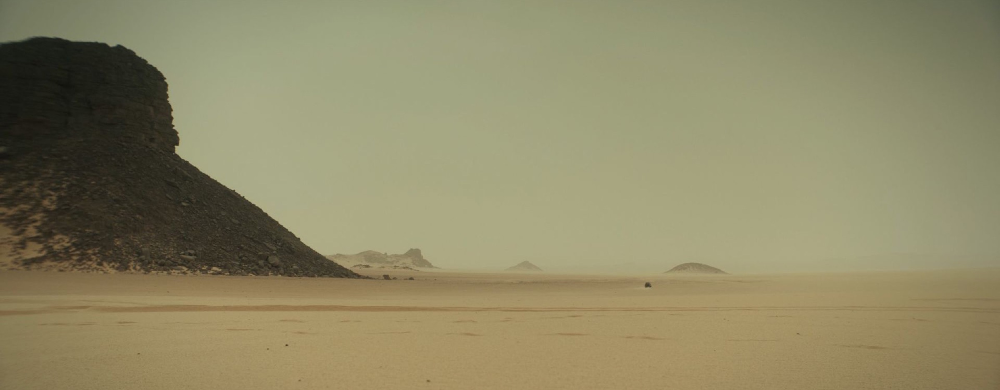
Réalisateur · Scénariste
Yazid Yettou
Boumla (2020) · Collatéral ! (2025) · Younès (en développement)
Alger, Algérie · yazid.yettou@gmail.com
Né en 1986 · Alger
Portrait
Yazid Yettou est réalisateur et scénariste algérien. Son travail explore les tensions familiales et les fractures intimes à hauteur d'enfant ou d'adolescent, dans des territoires que le cinéma algérien filme peu : villages reculés des Hauts Plateaux, campements touaregs du Grand Sud, zones frontalières.
Diplômé en audiovisuel en 2009, il apprend le métier sur le terrain. Dès 2011, il intègre l'équipe technique du Crépuscule des ombres de Mohamed Lakhdar-Hamina — une école de plateau qu'il décrit comme fondatrice. Il enchaîne pendant dix ans les postes techniques sur des productions algériennes, avant de passer à la réalisation.
En 2020, il signe Boumla, son premier court métrage, tourné avec des comédiens non professionnels dans le village de Mellakou, près de Tiaret. Le film circule sur trois continents et remporte notamment le Grand Prix ex æquo du Festival National du Cinéma de la Femme de Saïda et le prix du Meilleur court métrage africain au Royaume-Uni.
En 2025, Collatéral ! — tourné à Djanet, dialogué en tamasheq, l'un des rares films touaregs contemporains — remporte le Gourara d'Or, Grand Prix de la première édition du Festival International du Court Métrage de Timimoun. Le film poursuit aujourd'hui une carrière internationale, de Vérone à Moshi.
Il développe actuellement Younès, son premier long métrage de fiction.
Influences — Frères Dardenne · Nuri Bilge Ceylan · Cristian Mungiu · Ingmar Bergman · cinéma iranien · Tariq Teguia
Compétences
Réalisation · Écriture de scénario · Direction d'acteurs · Montage · Photographie · Direction artistique
Langues
Arabe · Français · Anglais
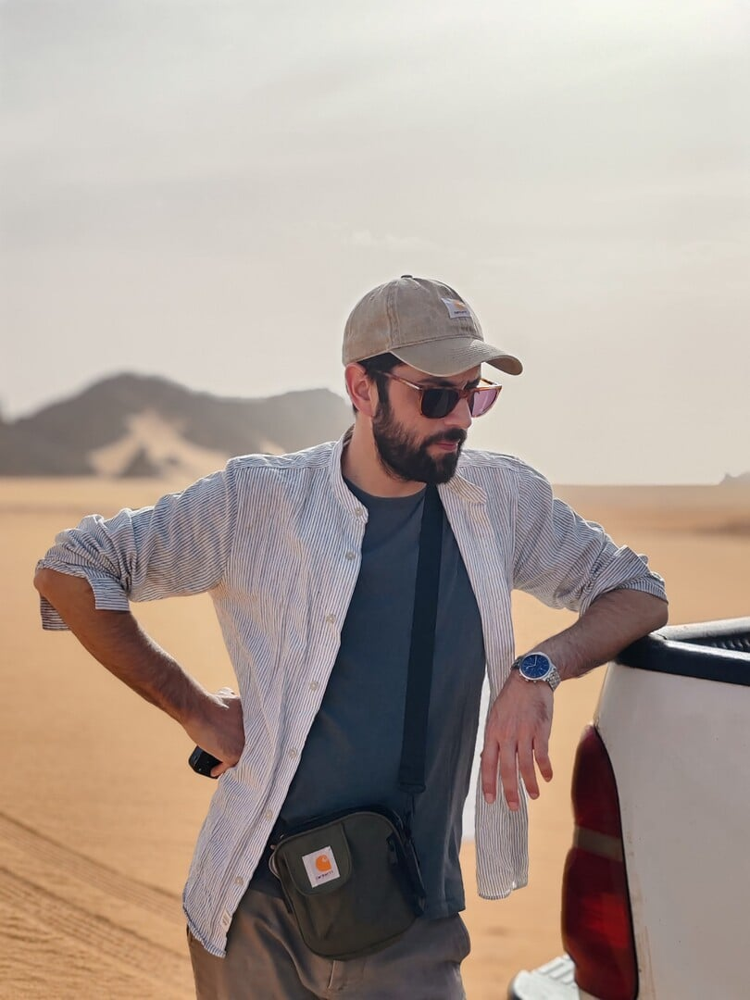
Un cinéma d'observation
Démarche artistique
Filmer ce qui ne se dit pas
Mes films avancent par le silence. Ce qui compte s'installe dans les regards, les gestes retenus, les choses que les personnages ne se disent pas. Je cherche une narration épurée où le spectateur reconstruit lui-même ce qui manque, plutôt qu'une dramaturgie qui explique.
Le territoire comme personnage
Le désert de Djanet, un village de Tiaret, une zone frontalière au sud de Tébessa : les lieux que je filme ne sont pas des décors. Ils portent des tensions sociales et économiques qui façonnent ceux qui les habitent. Je tourne en décors réels, au rythme de ces lieux.
Des visages non professionnels
Je travaille avec des comédiens non professionnels, souvent issus des régions où je tourne. Cette contrainte, d'abord budgétaire, est devenue un choix : elle produit une vérité brute que je ne saurais pas obtenir autrement.
Ne pas juger
Mes personnages sont pris dans des contradictions — un père compromis, une femme contrainte au mariage, une communauté effacée par une opération militaire. Le film ne tranche pas à leur place. Il les accompagne.
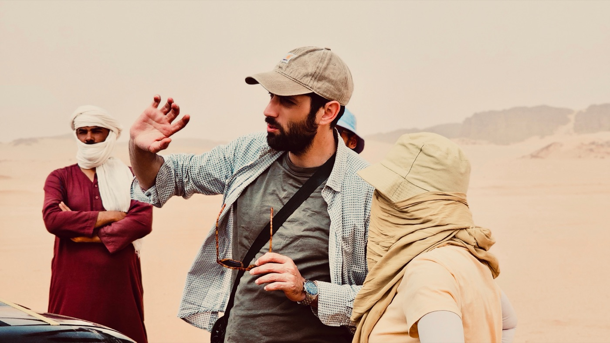
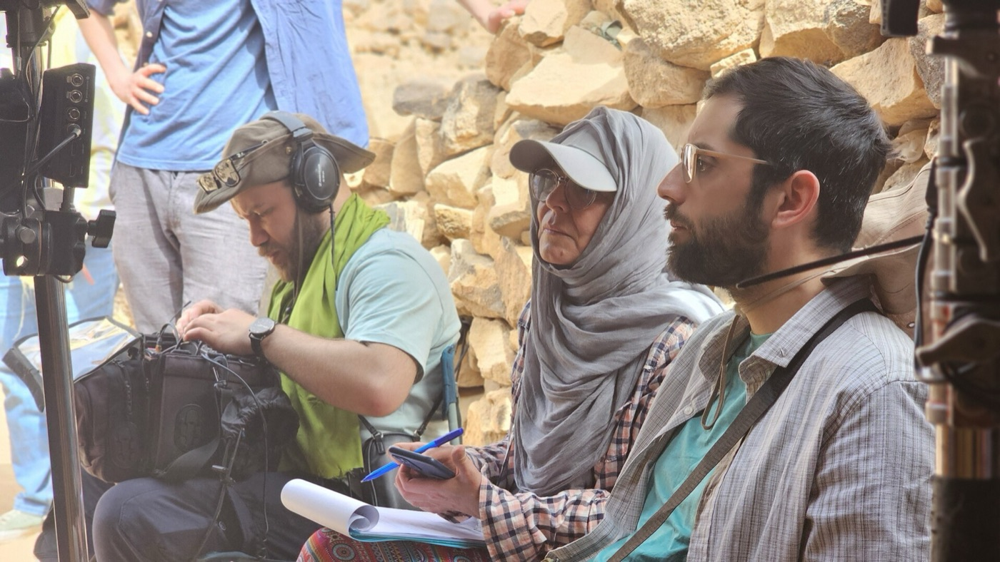
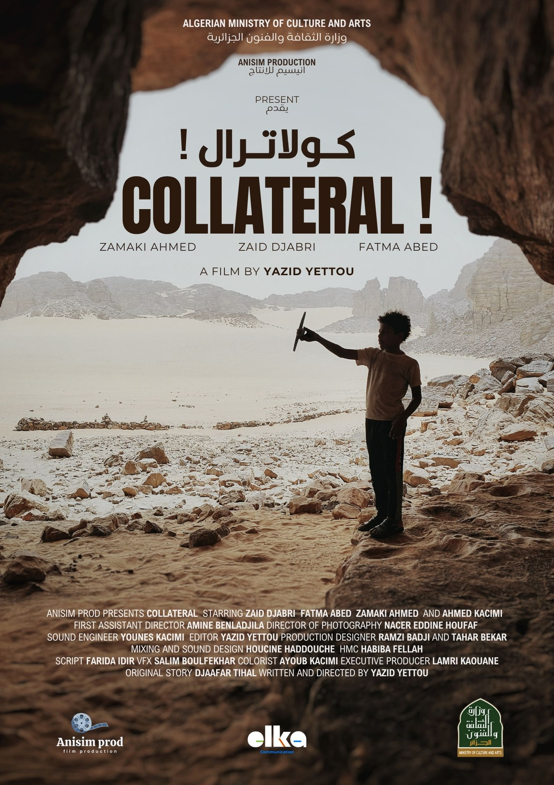
Court métrage · 2025
Collatéral !
Gourara d'Or — Grand Prix
TISFF Timimoun 2025
Synopsis
À l'extrême sud de l'Algérie, près de la frontière malienne, Brahim, 10 ans, grandit dans une petite famille touarègue, en harmonie avec le désert. Inséparable de son avion en bois, il lève souvent les yeux vers les nuages, fasciné par le vol. Mais un jour cette paix fragile se brise : lors d'une opération militaire hybride, un drone de haute technologie s'écrase à quelques pas des tentes.
Au quartier général, l'ordre tombe : effacer toute trace, à n'importe quel prix. L'accident devient une menace invisible, aux conséquences irréversibles pour Brahim et sa communauté.
Le film rend hommage à l'esprit de l'artiste disparu Othmane Bali. Le dialogue y est minimal : l'essentiel passe par l'image et le paysage.
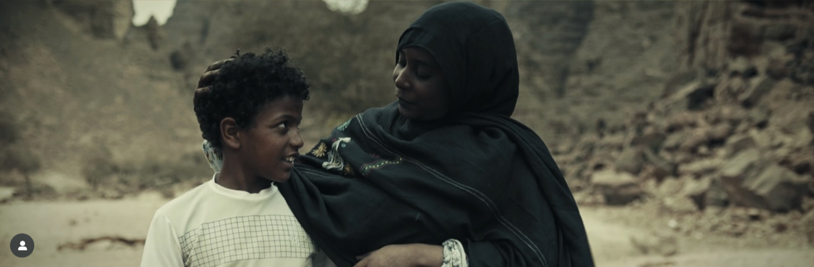
Sélections & prix
- Grand Prix — Gourara d'Or · TISFF Timimoun, 1re éd. · Algérie · nov. 2025
- Prix du Jury · JCIS Sétif · Algérie · 2026
- 2e place · New York Forum of Amazigh Film · États-Unis · 2026
- Mention Spéciale du Jury · Festival Nat. du Cinéma de la Femme, 9e éd. · Saïda · mai 2026
- 45e Festival du Cinéma Africain de Vérone · Italie · 2026 — Première italienne
- Kilimanjaro Film Festival · Moshi, Tanzanie · juillet 2026
- The Film Week · Namibie · 2026
- Filmare la Storia · Turin, Italie · 2026
- Festival International d'Imedghassen · Algérie · 2025–2026
- Pulling Focus — African American Film Festival · Iowa, États-Unis · 2026
- Native Spirit Film Festival · Londres, Royaume-Uni · oct. 2026
- International African Film Festival in Argentina (FICAA) · Argentine · 2026
- Uncolonial Film Festival · Münster, Allemagne · août 2026
- YS Festival — festival du court métrage algérien · Cévennes, France · 2026
Équipe
Écrit et réalisé par Yazid Yettou · Histoire originale Djaafar Tihal · Avec Zaid Djabri, Fatma Abed, Zamaki Ahmed, Ahmed Kacimi · Image Nacer Eddine Houfaf · Montage Yazid Yettou · 1er assistant réalisateur Amine Benladjila · Décors Ramzi Badji, Tahar Bekar · Son Younes Kacimi · Mixage & sound design Houcine Haddouche · VFX Salim Boulfekhar · Étalonnage Ayoub Kacimi · Scripte Farida Idir · Maquillage & coiffure Habiba Fellah · Producteur exécutif Lamri Kaouane.
Court métrage · 2020
Boumla
Le destin croisé de Karim, un garçon de 10 ans qui croit aux superstitions et aux rituels les plus absurdes pour échapper à une journée d'école, et de Lamia, une enseignante dont la vie bascule lorsque son père la contraint à épouser un homme qu'elle n'a pas choisi.
Déchirée entre l'amour qu'elle porte à Jamel et l'obligation de se soumettre à un mariage arrangé, elle le quitte sans explication. Submergé par la colère, Jamel commet un acte irréparable qui bouleversera à jamais la vie de ces trois personnages.
Premier film. Tourné avec des habitants de Mellakou n'ayant jamais fait de cinéma, sur un budget minimal obtenu auprès du FDATIC. Avant-première nationale à la Cinémathèque algérienne le 1er décembre 2021.
Sélections & prix
- Grand Prix ex æquo + Prix d'encouragement (interprétation féminine) · Festival National du Cinéma de la Femme · Saïda · oct. 2022
- Best African Short Film · Link International Film Festival · Royaume-Uni · déc. 2023
- Mention Spéciale du Jury · Alexandria Short Film Festival · Égypte · fév. 2023 — Première égyptienne
- Festival du Film Maghrébin d'Oujda · Maroc · oct. 2022 — Première marocaine
- Festival International du Film d'Alger · Algérie · déc. 2022
- Woman & Children International Film Festival · Mascate, Oman · déc. 2022
- Festival Internacional de Cinema y Multimedia · Buenos Aires, Argentine · mars 2023
- Festival Benevento Cinema e Televisione · Bénévent, Italie · juin 2023
- Coliseum International Film Festival · Rome, Italie · déc. 2023
Images de plateau & du film
Galerie

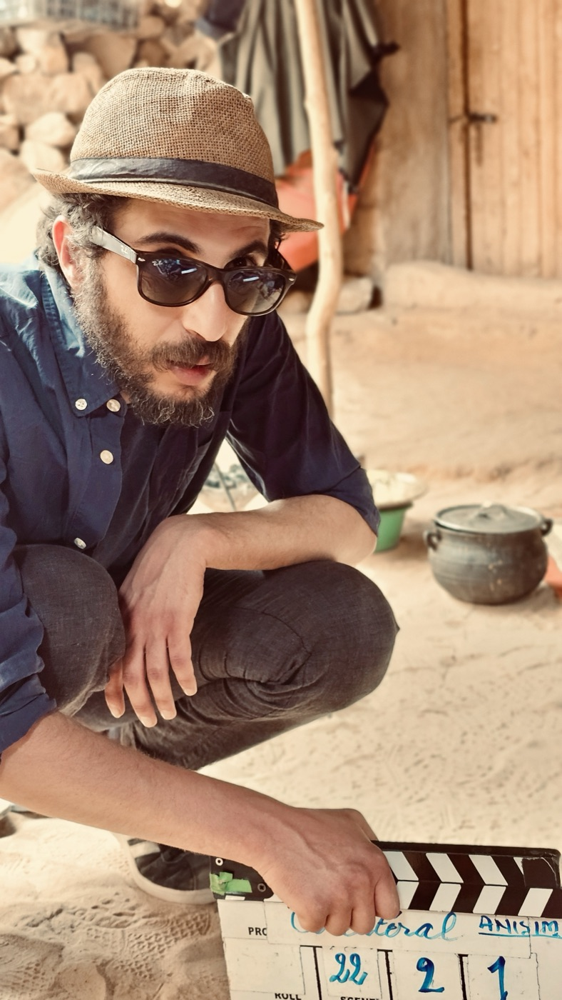
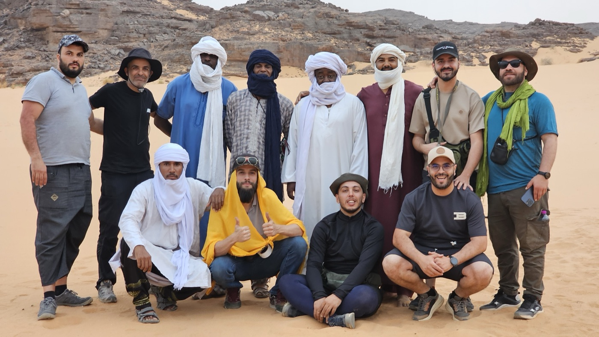
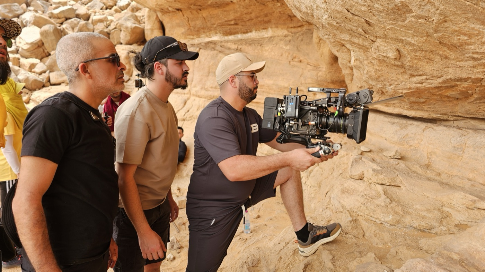
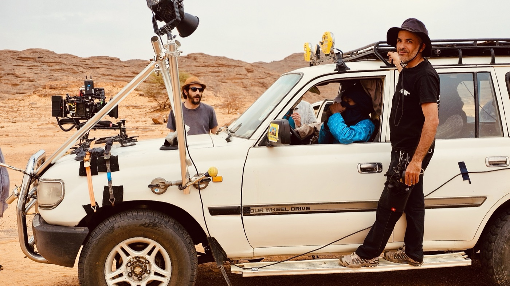
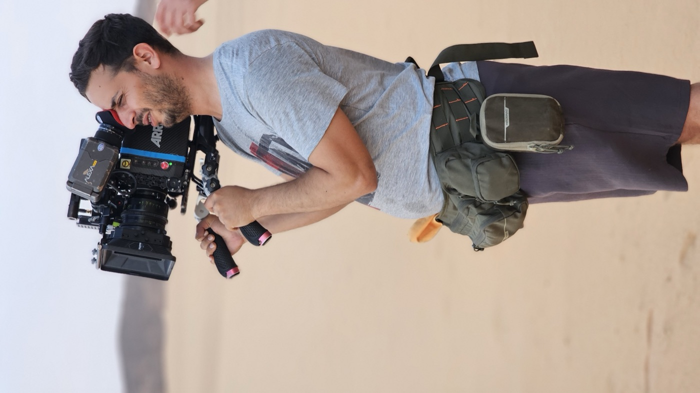
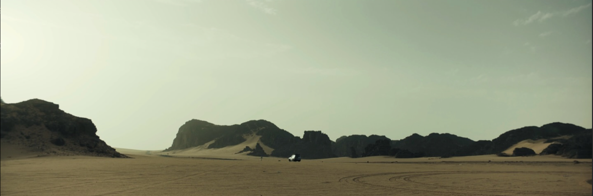

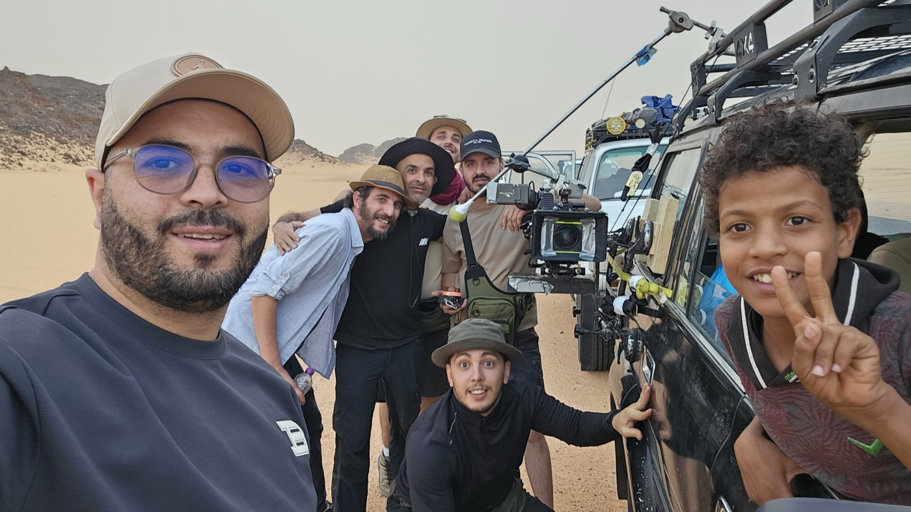
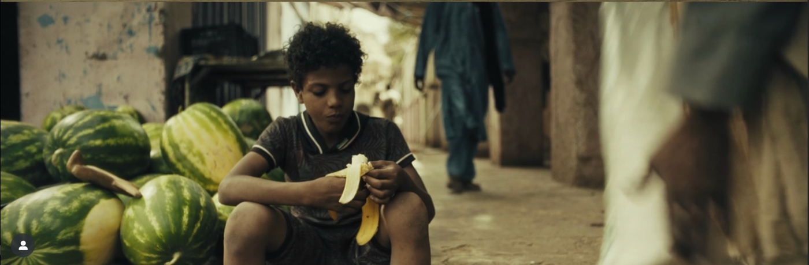
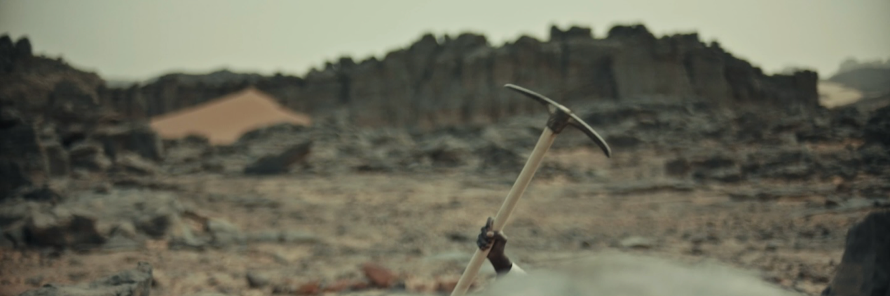
Premier long métrage · En développement
Younès
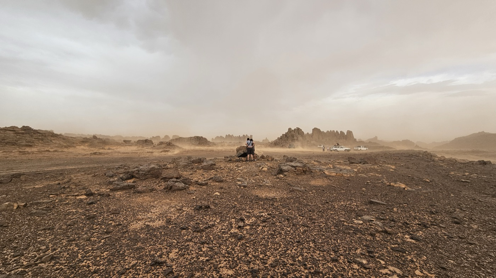
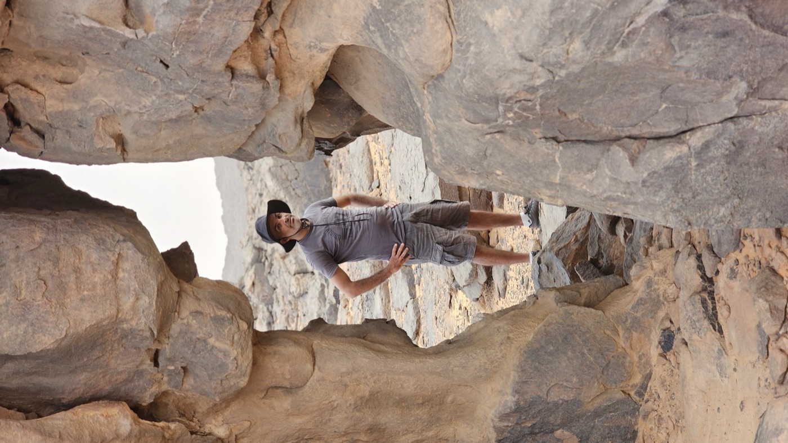
Images de repérages et d'ambiance désertique, en attente du tournage.
Synopsis
Au sud de Tébessa, dans un village frontalier figé dans la poussière et la chaleur, Younès, 15 ans, étouffe dans une routine d'été sans contours. Sa grand-mère, couturière silencieuse, rythme la maison par le cliquetis de sa machine. Son père, ouvrier sur un chantier d'autoroute, incarne une autorité sèche et distante.
Un jour, il trouve un téléphone sans carte SIM. L'écran fonctionne encore : il devient son refuge. Younès filme en cachette la poussière, les insectes, les détails infimes de son monde. Mais sa caméra capte aussi l'invisible — un passage de contrebande aux abords du village, et bientôt l'image interdite de son propre père, impliqué dans le trafic.
Alors que la maison de son grand-père maternel est détruite par le chantier — emportant les derniers vestiges de sa mère disparue — l'univers de Younès se fissure. La mort soudaine de sa grand-mère précipite l'arrivée d'Amel, sa sœur aînée étudiante à Alger. À elle seule, il ose montrer ses images.
Note d'intention
Younès prolonge ce qui traverse mon travail depuis plusieurs années : la transmission, la responsabilité morale, le poids du non-dit, et la manière dont un territoire frontalier façonne ceux qui l'habitent.
Le film adopte une narration épurée et naturaliste, à la frontière du documentaire et de la fiction : décors réels, temps long, comédiens amateurs.
Projets en développement
En écriture
Urer
Long métrage · 90 min · 2024Scénario de long métrage écrit en parallèle du développement de Younès.
Protocol 13
Série · 3 épisodes · 2025Projet de série écrit en français et en arabe, avec traduction complète des trois premiers épisodes, note d'intention et bible de personnages.
Younès
Long métrage · En développementPremier long métrage de fiction, en écriture — recherche de résidence et de partenaires.
La Boucle verte
Projet · En archiveProjet d'écriture antérieur.
Ce que je cherche
Résidence
Un temps de retrait pour l'écriture
Le passage du court au long métrage demande une maturation particulière. Une résidence m'offrirait le temps de retrait nécessaire pour approfondir l'écriture de Younès.
Une recherche visuelle et sonore
Repérages, archives, matière documentaire — pour nourrir une mise en scène qui repose davantage sur l'atmosphère que sur le dialogue.
La confrontation à d'autres regards
Les échanges avec des artistes d'autres disciplines me permettent de questionner mes choix et d'ouvrir des pistes que je n'aurais pas trouvées seul.
Un rythme alterné
Entre phases de concentration solitaire et moments de partage avec les autres résidents — les deux me sont nécessaires.
« J'aime le cinéma qui casse les codes. »
Contact
Yazid Yettou
Réalisateur · Scénariste
yazid.yettou@gmail.comDossiers, scénarios et liens de visionnage disponibles sur demande.